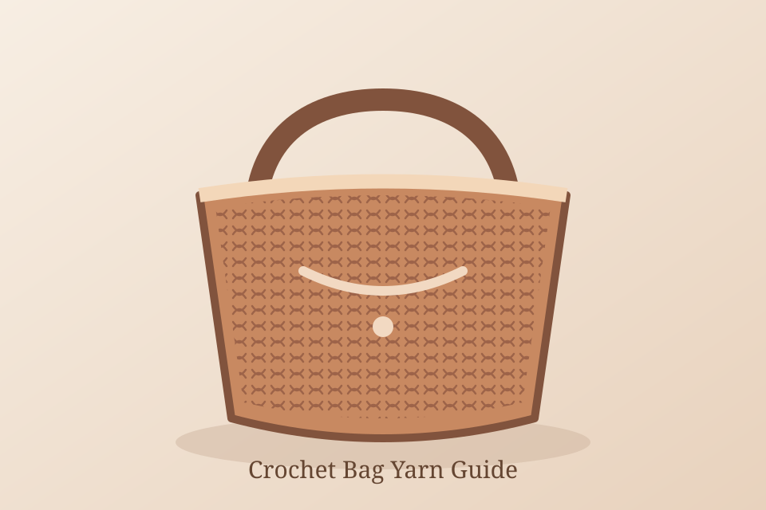

Best Yarn for Crochet Bags: How to Choose Strong, Durable Yarn

The yarn you choose can make a big difference to how a crochet bag looks and performs. A bag may carry a phone, wallet, water bottle, books, or everyday essentials, so its fabric needs to cope with regular handling and some weight. The best yarn is not simply the softest or prettiest option. It is the one that suits the bag's shape, intended use, and care requirements.
This guide compares common yarn choices and explains what to check before you begin. Whether you are making a market tote, a small shoulder bag, or a structured everyday purse, these practical tips can help you choose with confidence.
What Makes Yarn Suitable for Crochet Bags?
A useful bag yarn should create a fabric that is strong enough for its purpose, does not stretch more than you want, and is comfortable to work with. Consider these qualities before choosing a color or buying several skeins:
- Durability: The yarn should tolerate repeated handling and ordinary friction.
- Shape retention: A bag that needs structure should not become overly floppy when filled.
- Stretch: Some fibers and loose stitch patterns can lengthen under weight.
- Washability: Check the care label, especially for a bag that will be used often.
- Comfort: The finished fabric should feel suitable against your hands, shoulder, or clothing.
1. Cotton Yarn: A Versatile Choice for Everyday Bags
Cotton is a popular option for crochet bags because it usually creates a firm, clearly defined stitch pattern. It is available in many colors and thicknesses, and it works well for market totes, small purses, and casual summer bags. Cotton can also be easier to care for than some delicate fibers, but always follow the yarn label because washing instructions vary by construction and blend.
One thing to remember is that cotton has less natural bounce than wool. This can be helpful when you want a stable fabric, but a tightly crocheted cotton bag may feel firm. Make a small swatch first to check the drape and flexibility.
2. T-Shirt Yarn: Best for Chunky, Structured Designs
T-shirt yarn is made from strips of knitted fabric and is often much thicker than standard yarn. It can create a substantial bag with a bold, modern appearance. It is particularly useful for baskets, sturdy mini bags, and designs where a chunky texture is part of the look.
However, t-shirt yarn can make a finished bag heavy, especially when the project is large. Its thickness can also make crocheting more physically demanding. Check the weight of the yarn and consider whether the finished bag will be comfortable to carry.
3. Acrylic Yarn and Blends: Colorful and Budget-Friendly
Acrylic yarn is widely available and comes in a broad range of colors. It can be a practical choice for decorative bags, lightweight accessories, and projects where color selection matters. Some acrylic yarns are soft and flexible, though a very soft yarn or loose stitch pattern may produce a bag that stretches or loses its shape when loaded.
Acrylic-cotton blends can offer a balance of characteristics, but blends vary. Read the fiber percentages and care instructions rather than assuming every blend behaves the same way.
4. Choose the Right Yarn Weight
Yarn weight affects the thickness, appearance, and firmness of the finished bag. Medium-weight yarn is a flexible starting point for many tote and shoulder-bag patterns. Bulky yarn can work well for a chunky design, while fine yarn may suit a small, detailed purse but usually takes more time to complete.
Do not choose weight in isolation. A medium-weight cotton can create a firmer fabric than a very soft bulky yarn. Compare the recommended hook size, make a swatch, and check whether the fabric supports the shape you want.
5. Think About Stretch and Bag Structure
Even a strong yarn can produce a bag that stretches if the stitches are loose or the pattern is designed with a lot of drape. For a bag that will carry heavier items, consider a denser stitch pattern and a firm gauge. A lining can help support the shape and prevent small objects from slipping through open stitches.
6. Match the Yarn to the Type of Bag
Market tote
A medium-weight cotton is a dependable starting point for a reusable tote. Choose a stitch pattern that does not leave large gaps if you plan to carry small items.
Small shoulder bag
Cotton or a suitable cotton blend can work well. Consider the weight of the finished bag and make the strap wide or reinforced enough for comfortable use.
Clutch or evening purse
A smooth cotton, a fine blend, or a yarn with a subtle sheen may suit a smaller decorative bag. Since the bag carries fewer items, appearance and stitch definition may be more important than heavy-duty structure.
Chunky basket bag
T-shirt yarn or another thick yarn can create a bold shape. Keep the finished weight in mind, and check that the base and handles are secure.
7. Do a Small Test Before Buying for the Whole Project
Before committing to a large quantity, make a swatch using the hook and stitch pattern you intend to use. Measure it, handle it, and see whether it keeps its shape. If possible, attach a short sample strap and gently test how the fabric behaves under a modest load. This is a simple way to spot excessive stretch before spending time on the full project.
Also check the yarn label for yardage, dye-lot information, fiber content, and washing instructions. If you need multiple skeins, buying them from the same dye lot can help keep the color consistent.
Common Mistakes to Avoid
- Choosing yarn only because the color looks attractive.
- Using a very loose stitch pattern for a bag that needs to hold small or heavy items.
- Ignoring the finished weight of thick yarn.
- Skipping a swatch and discovering too late that the fabric stretches.
- Making narrow straps without checking how they feel when the bag is carried.
- Ignoring care instructions and assuming every yarn is machine washable.
Frequently Asked Questions
Is cotton yarn the best yarn for crochet bags?
Cotton is a strong all-round option for many everyday crochet bags because it offers clear stitch definition and can create a firm fabric. The best choice still depends on the bag design, yarn construction, and intended use.
Does crochet bag yarn stretch?
It can. Stretch depends on the fiber, yarn construction, stitch pattern, hook size, and weight placed inside the bag. A swatch and a denser fabric can help you assess and reduce unwanted stretch.
Is t-shirt yarn too heavy for a crochet bag?
Not necessarily. It is useful for chunky designs, but a large t-shirt-yarn bag may be heavy even before anything is placed inside it. Consider the finished dimensions and how you plan to carry it.
What yarn weight should beginners use for a crochet tote?
Medium-weight yarn is a manageable starting point for many beginners. Follow the pattern's recommendations and make a swatch to check the fabric before beginning.
Should I line my crochet bag?
A lining is optional, but it can help a bag hold its shape, protect the crochet fabric, and keep small items from slipping through the stitches. It is especially useful for open or loosely stitched designs.
Crochet Bag Inspiration: A Finished Shell-Style Bag
If you are still deciding on the shape or style of your next project, looking at a finished crochet bag can help you plan the design, proportions, and strap style. This ocean-inspired conch shell shoulder bag is a ready-made example for design inspiration. It is a finished bag, not a yarn or crochet kit.
Explore the Crochet Ocean Conch Shell Bag
A handmade-style shell-inspired crossbody shoulder bag to browse for its textured look and seaside design. Check the listing photos, materials, dimensions, seller details, and customer reviews before ordering.
SHOP NOWAffiliate disclosure: The Yarn Nest may earn a commission from qualifying purchases made through this link, at no extra cost to you.
Final Thoughts
For many everyday crochet bags, cotton yarn is a reliable place to start. T-shirt yarn can suit chunky structured designs, while acrylic and blended yarns offer more options for color, texture, and budget. Think about what the bag needs to carry, how it should hold its shape, and how you will care for it. A small test swatch is often the simplest way to make a better yarn choice.
Once you have chosen your yarn, explore our guide to reading crochet patterns to make your next project easier to follow.